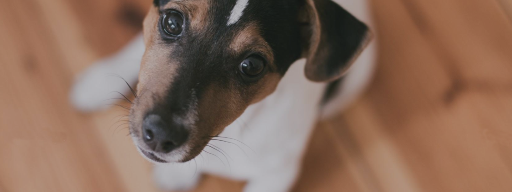
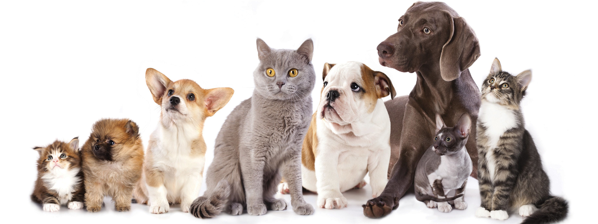
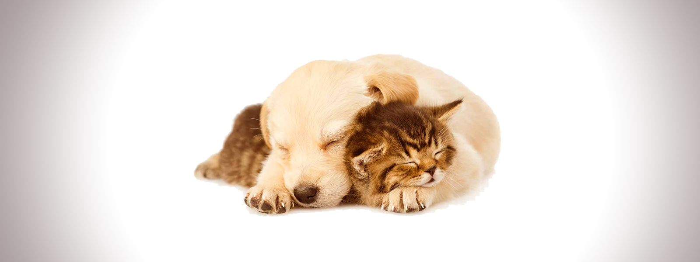
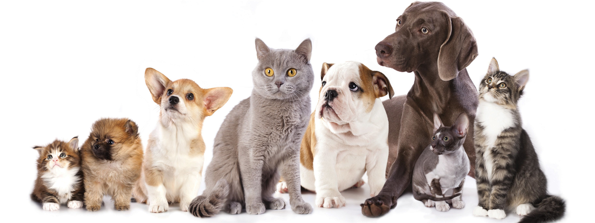
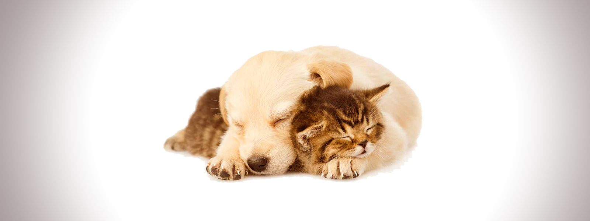
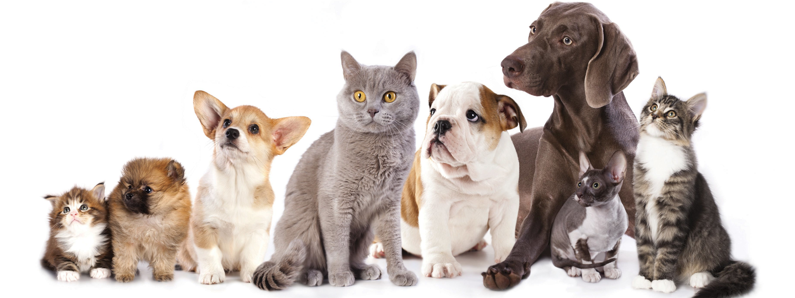
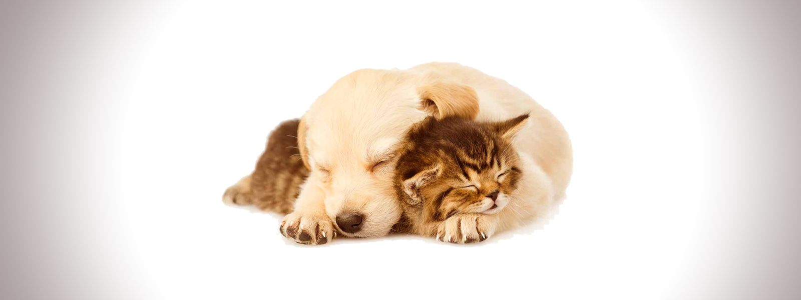
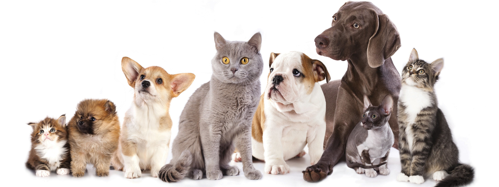
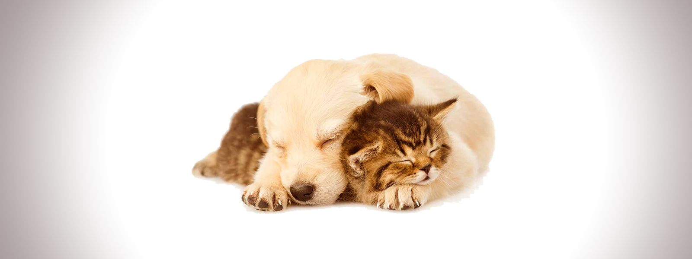

 







Tomar a decisão de ter um bichinho de estimação em casa é algo difícil e que precisa ser muito bem pensado para não haver arrependimento posterior, pois o lugar do bichinho é dentro de casa. Não adote para abandonar
Deu o azar de não ter um lar para se aconchegar como seu.
...eles sempre acabam se dando bem.
Que não seja realmente virando latas na rua.
Que tal um passeio? Com o seu cão √© interessante sair as vezes, para que ele se exercite e se socialize com outros cães e com as pessoas.üíú
Eles só querem um carinho. Muitas vezes, o animalzinho só é agressivo pois não teve carinho e amor em seu crescimento, nada que não possa ser resolvido com um bom lar e calma.
Treinado e pronto para amar Eles só querem amar, cansaram de correr do perigo e dos maus-tratos, só querem pular no colo do dono.
Ração? Eu ouvi falar em alimento? Deixe ao seu animalzinho uma alimentação balanceada, próprio para seu porte e peso, evitando dar comida humana e com água fresca sempre à disposição
Cuidado não é só carinho Procura o médico veterinário quando o seu pet adoece e não tente medicá-lo por conta própria. Vacina em dia em?

Eu tenho nome e sobrenome mocinho Pois é, não esqueça a identificação do seu bichinho, ele é bem importante para que caso ele esqueça o caminho, alguém possa entrar em contato.